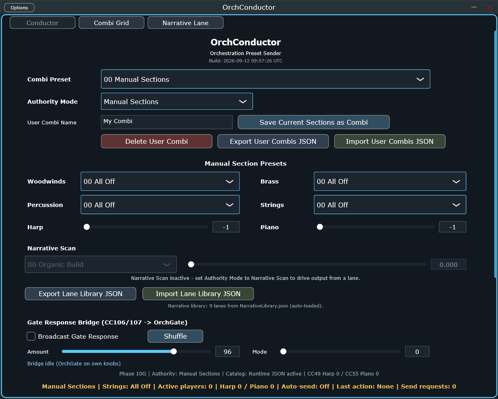

A full-score orchestration sender: combi presets, per-section presets, a Narrative Scan mode that walks a named arc shape across up to 64 combi "stops," an Instrument Combi Grid for hand-tuning any combination, and a response bridge that broadcasts a deterministic articulation randomizer to every OrchGate in the rig. The biggest, most feature-dense plugin in the family — this guide uses one marker per region, not per control, with full tables carrying the exhaustive detail.
Only the default Conductor view is screenshotted below. Combi Grid (43
instrument sliders) and Narrative Lane (the arc-proposal editor) are documented from source in
§02–§03, same depth, no picture — switching views needs a live click this session couldn't automate on an
unlisted build.
Top to bottom: which combi is playing and how (1–3), the 4 manual section presets plus Harp/Piano (4–5), the Narrative Scan arc-walker (6), the OrchGate response broadcast (7), and a live status bar (8).

Every CC OrchConductor can send, as one 0-127 slider, in send order — the "any combination, including two instruments from the same family" answer. Saves into a user combi's explicitCcValues, which overrides every section preset and the harp/piano fields.
| Section | CC range | Count |
|---|---|---|
| Woodwinds | 20–31 | 12 |
| Brass | 32–42 | 11 |
| Melodic percussion (mallets) | 43–48 | 6 |
| Harp | 49 | 1 |
| Strings | 50–54 | 5 |
| Piano | 55 | 1 |
| Unpitched percussion | 56–62 | 7 |
43 total. Actions: Save as New Combi, Update Selected Combi, Load/seed from any factory or user combi, Seed from Current Output, Clear, and a Randomize button (generateRandomGridCombi — Balanced / Feature a section / Sparse / Tutti, orchestration-aware: strings backbone, woodwind pairs and horn units move together, one register favoured, never silent).
Builds a lane as an ordered list of combi "stops" along the 0..1 Narrative Position timeline — the direct model for MC's own Propose-a-Piece arc-shape generator.
| position | 0..1, editable text field, even-spread on resize |
| combi | dropdown, any factory or user combi |
| ↑ / ↓ / ✕ | reorder or remove |
| Control | Range / Choices |
|---|---|
| Arc shape | Organic Build · Arch · Long Fade · Terraced Blocks · Surging Waves · Heroic Journey · Suspense→Release · Mosaic · Catastrophe · Pastoral Plateau |
| Stops | 2–64 |
| Restlessness | 0.0–1.0 — low = hold/reprise earlier stops, high = always move on |
Each proposed stop also carries an optional pitch-field index (drives OrchNoteFilter's harmonic field via CC105), Harp/Piano override, and Gate Response mode/amount — one Narrative Position automation lane can drive orchestration, density, harmonic field, and articulation together. Save to Lane Library / Load / Delete round-trip against the same JSON file §01.6's Export/Import buttons use.
13 real, host-automatable APVTS parameters — everything else on this page (combi contents, grid values, lane points) is plugin-internal state, edited through the views above, not host automation.
| Parameter | Range / Choices | Default |
|---|---|---|
| combiPreset | int, factory + user combi ids | Manual Sections |
| woodwindsPreset / brassPreset / percussionPreset / stringsPreset | int, per-section preset id | 0 (All Off) |
| sendOnPresetChange | Off/On | On |
| inputPassthrough | Off · Control CCs (≥105) · All | Control CCs |
| authorityMode | Manual Sections · Combi Preset · Narrative Scan | Manual Sections |
| narrativeLane | int, 0..(lane count-1) | 0 |
| narrativePosition | 0.0–1.0 | 0.0 |
| fieldSelectCc | 0–127 (0=off) | 105 |
| gateResponseModeCc | 0–127 (0=off) | 106 |
| gateResponseAmountCc | 0–127 (0=off) | 107 |
The status bar's own Active: N players / Auto-send: On/Off readout is the
fastest way to confirm a combi or narrative-scan move actually reached the wire — before assuming a routing
problem downstream at OrchGate.